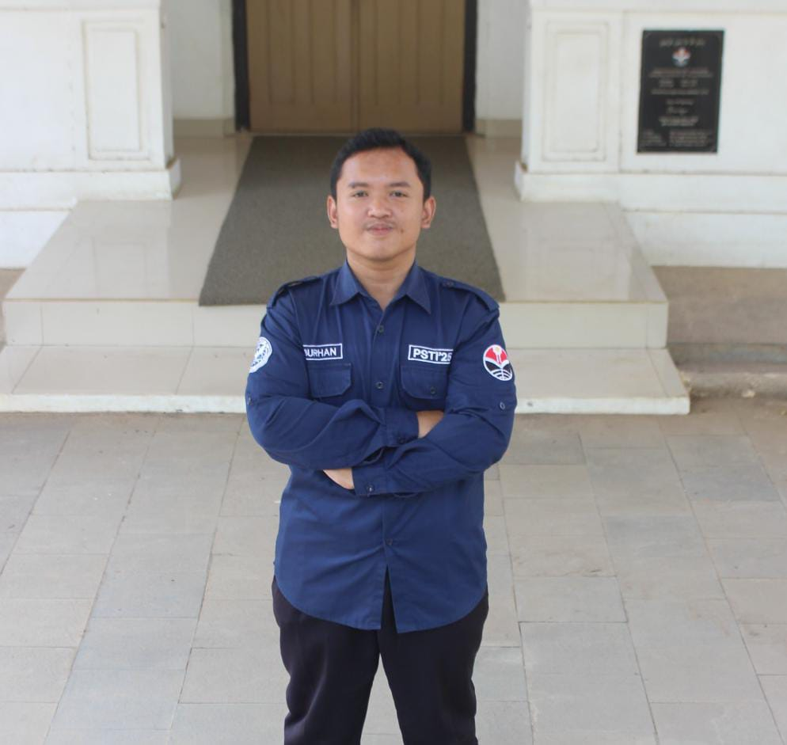

Ruang digital untuk mengenal lebih dekat siapa saya, apa yang saya pelajari, pengalaman yang saya jalani, serta berbagai karya dan perjalanan yang sedang saya bangun.

Website ini merupakan ruang untuk memperkenalkan diri saya secara lebih luas, mulai dari perjalanan pendidikan, pengalaman organisasi, project yang pernah dikerjakan, hingga berbagai hal yang sedang saya pelajari. Dalam Web ini, saya ingin berbagi tentang perjalanan saya dalam dunia pendidikan dan teknologi, serta memberikan wawasan tentang apa yang telah saya capai dan pelajari sejauh ini. Semoga website ini dapat menjadi sumber inspirasi dan informasi bagi pengunjung yang tertarik dengan bidang yang saya geluti.
Silahkan Kunjungi Halaman Lainnya untuk mengetahui lebih lanjut tentang pengalaman dan project saya.